“Atendimento excelente, super atenciosos e cautelosos. O atendimento iniciou comigo e hoje já temos a família inteira como clientes. A recepção impecável, nos deixa bem à vontade.”
Mais confiança para sorrir em Ji-Paraná.
Implantes, aparelho, lentes de contato dental e clareamento. Com calma, explicação clara e acompanhamento do início ao fim.
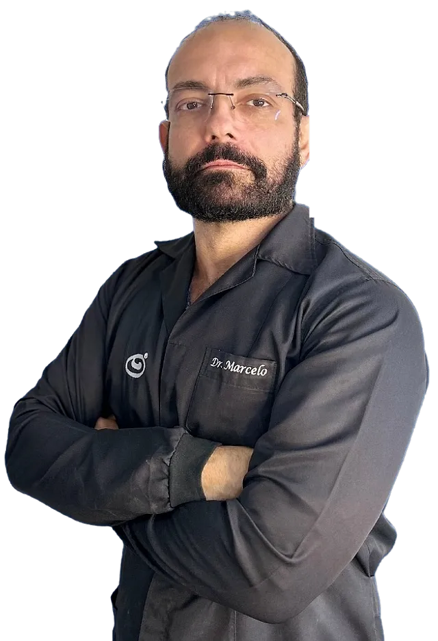
Aqui você é ouvido antes de qualquer tratamento.
Sabemos que sentar na cadeira do dentista dá frio na barriga. Por isso, cada passo é explicado com calma. Você entende tudo, decide junto e se sente seguro.
Instituto Mauri
Cuidado que começa na recepção.
Odontologia especializada na Nova Brasília, em Ji-Paraná, com o Dr. Marcelo Mauri à frente.
Primeiro ouvimos você. Depois, um exame completo e um plano claro, com opções e prazos. Sem pressa e sem surpresa.
Agendar avaliação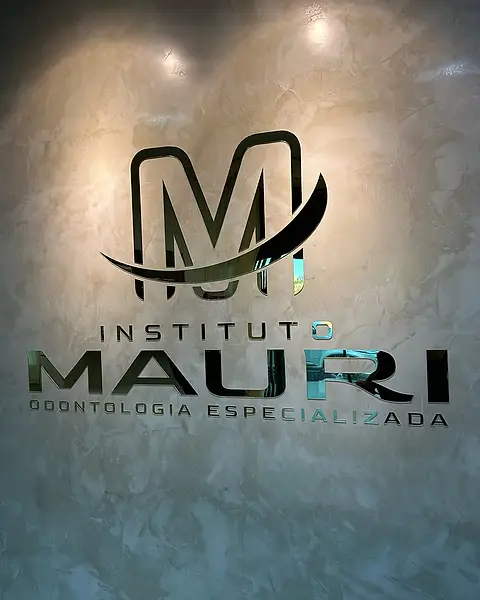
Tratamentos para cada fase do seu sorriso.
Tudo começa com uma avaliação. Nela você recebe o diagnóstico e o plano certo para o seu caso. Tire suas dúvidas
-
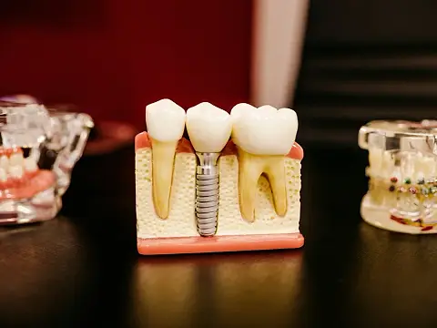
Implantes dentários
Faltam dentes e mastigar virou um incômodo?
Agendar implante -
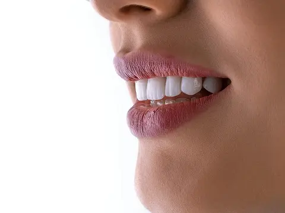
Lentes de contato dental
Quer dentes mais bonitos e com formato uniforme?
Agendar lentes -
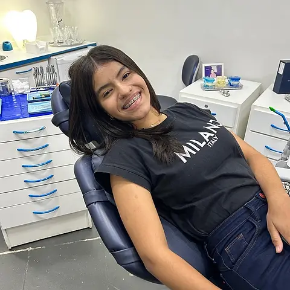
Aparelho ortodôntico
Dentes tortos tiram sua vontade de sorrir?
Agendar ortodontia -
Clareamento dental
Os dentes amarelados aparecem em toda foto?
Agendar clareamento
Também cuidamos de
01Avaliação clínica completa
Exame da boca toda para entender o que você precisa. Você sai com diagnóstico e plano claros.
02Prótese sobre implante (protocolo)
Dentes fixos presos em implantes. Substitui a dentadura solta e devolve firmeza para mastigar.
03Restaurações
Recupera o dente com cárie ou quebrado, na cor natural dele. Rápido e sem perder o dente.
04Tratamento de canal
Trata a dor e a infecção dentro do dente para salvar ele, com anestesia e conforto.
05Extrações e dente do siso
Retirada segura de dentes, inclusive o siso, com cuidado antes, durante e depois.
06Próteses dentárias em geral
Coroas, pontes e próteses móveis para repor dentes perdidos e voltar a sorrir.
07Odontopediatria (crianças)
Atendimento leve e divertido para os pequenos criarem hábitos e perderem o medo do dentista.
08Limpeza e prevenção
Remove o tártaro e as manchas e revisa a boca toda. Pega cedo o que poderia virar dor.
A avaliação
Tudo começa com uma conversa. Você recebe o diagnóstico em palavras simples, o plano com as opções para cada caso, o tempo de cada etapa e os valores antes de começar.
O cuidado por trás de cada sorriso.
Antes e depois de tratamentos no Instituto Mauri.
-
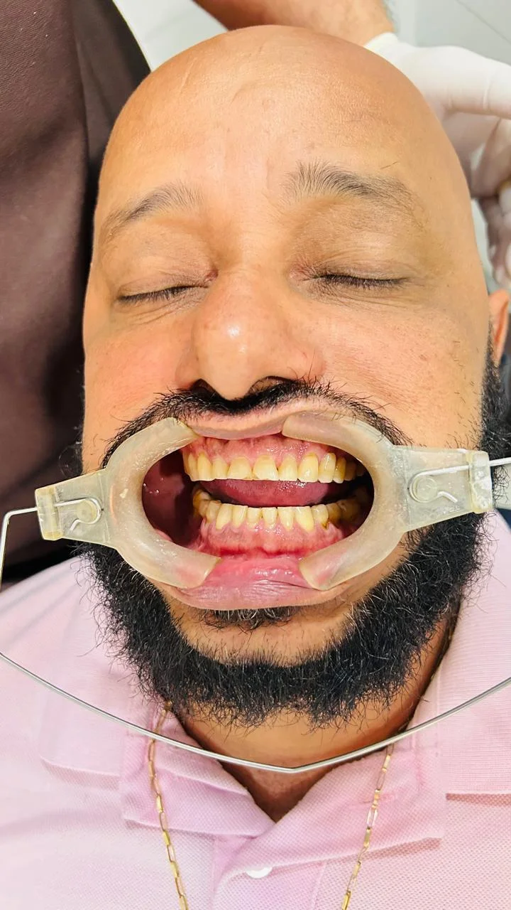
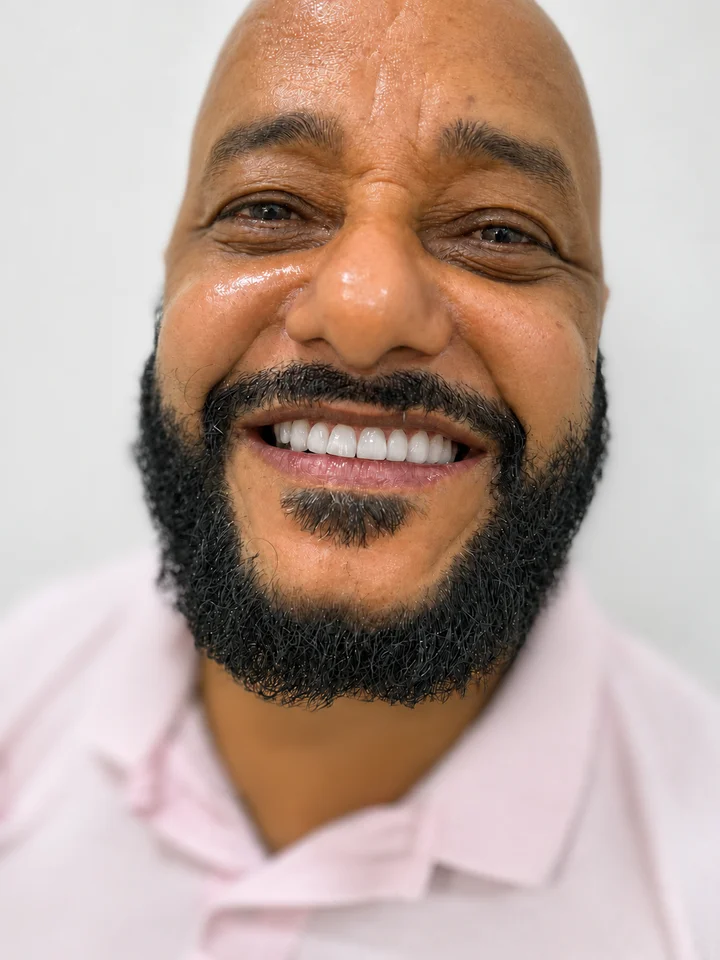
-
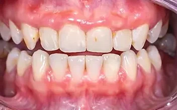
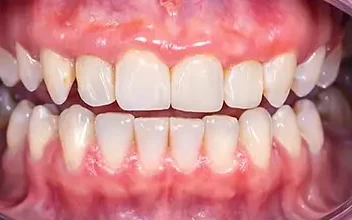
-
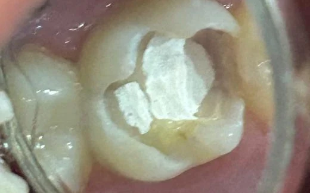
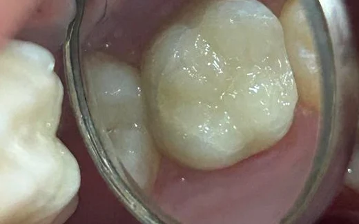
1/3
Avaliações
Quem confia, indica.
“Uma clínica espetacular, atendimento de primeira, já começa pela recepção. Dr. Marcelo Mauri ótimo profissional, indico a todos meus amigos.”
“Dr. Marcelo, profissional renomado, o melhor em que já fui!”
“Excelente clínica, profissionais capacitados. Recomendo.”
“Foi muito bacana, muito profissional. Gostei muito do atendimento, do lugar. Indico.”
1/5
Perguntas frequentes
Reunimos as dúvidas mais comuns de quem vai começar um tratamento. Não achou a sua?
Perguntar no WhatsApp
Como funciona a primeira consulta?
É uma avaliação completa. O Dr. Marcelo escuta o que você sente, examina seus dentes e explica o que encontrou. No fim, você recebe um plano com as opções para cada caso.
O orçamento é apresentado na avaliação?
Sim. Você vê as opções, o tempo de cada etapa e os valores antes de decidir qualquer coisa.
Implante dentário dói?
O implante é feito com anestesia, escolhida de acordo com cada caso. Seguir as orientações do dentista ajuda a controlar o desconforto na recuperação.
Lente de contato dental estraga o dente?
Em casos bem indicados, o desgaste pode ser mínimo ou até desnecessário. Isso é definido na avaliação, olhando o seu sorriso de perto.
Clareamento deixa os dentes sensíveis?
Algumas pessoas não sentem incômodo. Quando aparece, a sensibilidade costuma ser passageira. Siga as orientações do dentista ao longo do tratamento.
Adulto ainda pode usar aparelho?
Pode, sim. Avaliar cedo ajuda a identificar quando começar e pode facilitar a correção. O tempo de tratamento depende de cada caso.
Vocês atendem crianças?
Sim. Atendemos crianças, adolescentes, adultos e idosos. A família inteira pode cuidar do sorriso no mesmo lugar.
Como faço para agendar?
Toque em qualquer botão de WhatsApp desta página. Respondemos de segunda a sexta, das 8h às 12h e das 14h às 18h, e aos sábados, das 9h às 12h.
Onde estamos
Fácil de chegar.
- EndereçoR. Padre Silvio Michelussi, 1557 — Nova Brasília
Ji-Paraná/RO · CEP 76908-352 - HorárioSegunda a sexta
8h às 12h e 14h às 18h
Sábados, 9h às 12h - WhatsApp(69) 99601-2496
Agende sua avaliação
Seu novo sorriso começa com uma conversa.
Imagine sorrir numa foto sem pensar nos dentes. O primeiro passo leva um minuto: mande uma mensagem e escolha o melhor horário.
Agendar pelo WhatsApp Seg. a sex. · 8h às 12h e 14h às 18hSábados · 9h às 12h